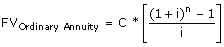

The value of a group of payments at a specified date in the future. These payments are known as an annuity, or set of cash flows. The future value of an annuity measures how much you would have in the future given a specified rate of return or discount rate. The future cash flows of the annuity grow at the discount rate, and the higher the discount rate, the higher the future value of the annuity.
This calculation is useful for determining the actual cost of an annuity to the issuer:
 C = Cash flow per period i = Interest rate n = Number of payments
This calculates the future value of an ordinary annuity. To calculate the future value of an annuity due, multiply the result by (1+i). (Payments start immediately instead of one period into the future.)
The basis is that providing a lump sum of $5,000 today costs more than providing a cash flow of $1,000 per year for five years. This is because if you provide the lump sum today, you could have invested it and received an additional return.
Using this example, and assuming a discount rate of 6%, the future value of an annuity that pays $1,000 per year for five years is $4,212 (1,000*[(1+0.06)5-1/0.06]=5,637). This means that if you could get a return on your invested funds of 6% per year, providing an annuity of $1,000 per year would be worth $637 ($5,637-$5,000) more to the issuer than giving a lump sum.
{kind=link}